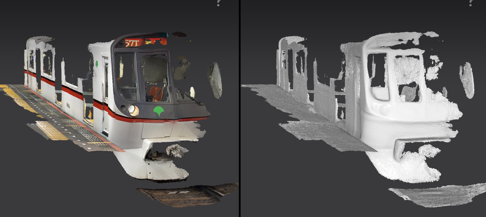
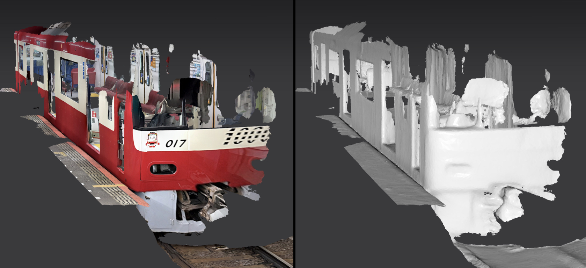

主に都営浅草線、京急線、京成線、北総線を走る車両の画像、音声、動画資料、スキャンデータを公開するページです。
車両を再現する用途を想定して素材を収集しています。
3DスキャンデータはiPhoneのLiDARセンサーで取得したものになりますので、ポリゴンの寸法の正確さには期待出来ません。また、テクスチャの貼り付け位置も正確とは限りません。モデリングには補助程度にお使い下さい。
資料画像
床下機器(海,山側) (CC BY-SA 4.0)
屋根上 (CC BY-SA 4.0)
3Dスキャンデータ
(1号車) 先頭車両 外装 (CC BY-SA 4.0)
(8号車) 運転台 (CC BY-SA 4.0)
3Dスキャンデータ
(1号車) 先頭車両 外装 (CC BY-SA 4.0)